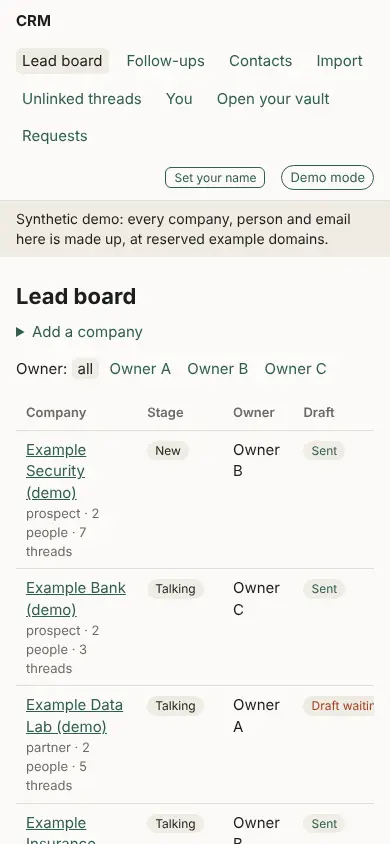
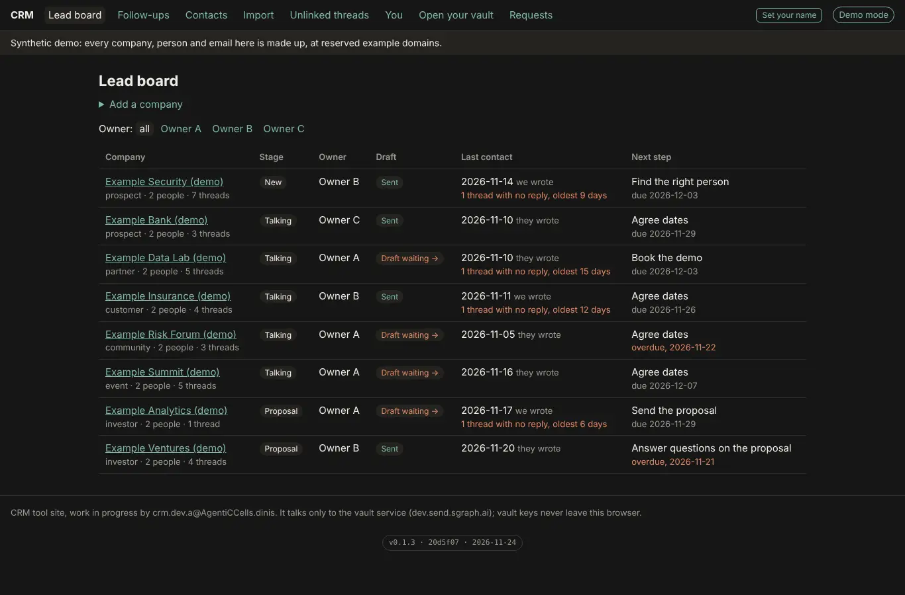

Synthetic users: the CRM tool, round 1 (baseline)
Site: https://crm.tool.sovereignweb.site/app/ at 20d5f07 (v0.1.3), the team's CRM for following up the people we met, in demo mode with made-up data at reserved example domains. One design (a table lead board); five are planned from the brief. Run: 24 November 2026, about 13:45 UTC, by design.b.rounds, asked by design.b. Would you use this every morning to follow up your contacts? 2 of 5. Look 3.0 (3, 3, 4, 2, 3). The review.
Method: Synthetic users. One agent played five personas from captures of nine pages, on a phone and on desktop, light and dark, with each page's phone text. These are simulations, and never replace the measured checks or a real person.
| Persona | Yes? | Look | In their words |
|---|---|---|---|
| Founder, 40 people from a conference to follow up | yes | 3 | "The Follow-ups page is nearly my morning list already ... On my phone, though, 'What we sent' and 'Sent' fall off the right-hand edge. And I can't see a way to write the follow-up from that row." |
| Salesperson who lives in email | no | 3 | "The one send button is 'Review and send (demo) →' at the bottom of a company page, not on the Follow-ups list ... the board says Example Security's draft is 'Sent' while its own page shows a draft still waiting." |
| Team lead, whole pipeline at a glance | yes | 4 | "On my laptop the Lead board is what I'm after ... It doesn't count deals by stage, and the two overdue rows sit fifth and eighth instead of at the top." |
| Low-vision reader, zoom on a phone | no | 2 | "Before any contact, the phone gives me eight menu links, two buttons and a demo banner ... the table already clips at 'Draft waitin' at normal size." |
| Sceptic with a spreadsheet | no | 3 | "To see my own data I'd need a 'CRM vault key' and an 'SG/Send access token' I don't have ... The days-without-reply count on Follow-ups is the one thing my sheet doesn't give me for free." |
The reasons against, ranked: the phone cuts off the columns that matter (3); you cannot act from the list (2); keys and tokens come before your own data (2); then, once each: the spreadsheet stays, the first phone screen is menus, nothing is sorted by urgency, the board and the company page disagree, and zoom is unknown.
What each wants on a phone at 8 in the morning: one list of who to chase today, each row with its action, fitting the width (founder); waiting drafts first, one tap from send (salesperson); counts by stage and owner, then overdue first (team lead); a collapsed menu and one stacked card per company (low vision); their own data loaded and a "do these today" list (sceptic). That is The Day, the brief's first recommendation.

